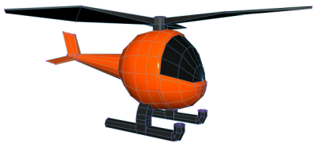
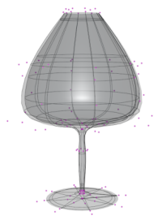
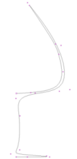
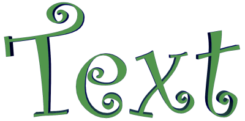
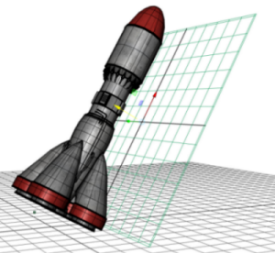
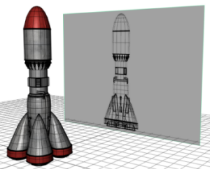
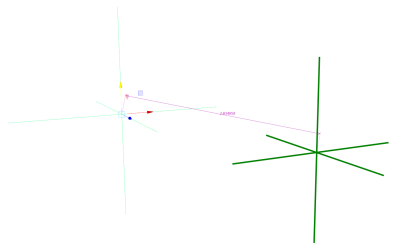

Maya 有多种不同类型的对象可供您用于不同目的。其中大多数用于为对象建模，但也有一些其他“辅助对象”可供您在场景中构建不同元素。
| 多边形对象(Polygon objects) |
 |
多边形对象是由面、边和顶点组成的 3D 几何对象，通常称为“多边形网格”。多边形网格广泛用于为游戏、电影和 Internet 创建的多种 3D 模型。 有关多边形网格的定义及其所有创建和编辑方法的详细信息，请参见多边形建模。 |
| NURBS（非均匀有理 B 样条线）曲面对象 |
 |
NURBS 曲面对象是由 U 向和 V 向曲线定义的面片组成的 3D 几何对象。曲面插补在控制点之间，从而生成平滑形状。NURBS 十分平滑，对于构建有机 3D 形状十分有用，且主要用于工业设计、动画和科学可视化领域。 |
| NURBS 曲线(NURBS curves) |
 |
曲线用于构建对象或用作场景中的其他元素。可以使用不同的方法从曲线创建 3D 对象，或者将其用于动画的运动路径等内容或用于控制变形。 有关如何绘制曲线以及通过其他方式创建曲线的详细信息，请参见创建 NURBS 曲线。 |
| 文本(Text) |
 |
文本是指您可以通过使用“类型”(Type)工具创建（选择。这可用于创建品牌宣传、飞行标识、标题序列以及其他需要文字的项目。 有关详细信息，请参见创建多边形文本。 |
| 构造平面(Construction planes) |
 |
构造平面是简单的平面，有助于更轻松地创建方向不沿 XYZ 轴的对象 - 选择。 通过“激活”(Make Live)工具将构造平面设置为“活动”状态（请参见设置激活的曲面）时，所有图形均会锁定到该平面。 |
| 图像平面(Image Planes) |
 |
图像平面是可供“投影”不同图像的 2D 平面（栅格），通常在为对象建模时用于参考图像，或者用作场景的背景图像。 您既可以创建未附加到摄影机的自由图像平面（选择(Create > Free Image Plane)），也可以创建附加到透视摄影机的图像平面（在透视视图面板中选择(View > Image Plane > Import Image)）。 有关详细信息，请参见图像平面。 |
| 定位器(Locators) |
 |
定位器类似图标，有时称为空对象，仅表示空间位置且不进行渲染 - 选择。 尽管定位器听起来很普通，但却是非常有用的辅助对象，例如，它可用来为角色关节、将其他对象约束到的对象建立父子关系或测量两点之间的距离。 |